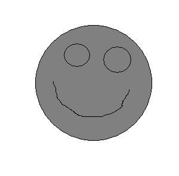
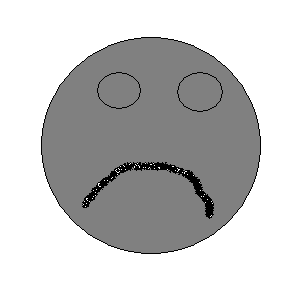
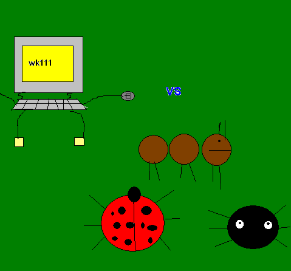

This free script provided by
JavaScript Kit
This lonely pennut is happy to see you. He will follow your mouse where ever it goes. It will never get sad when it sees you even though it is lonely now it won't be soon. Help it however you can and report back to me if he finds a good freind.
(I will be making the messege board as soon as I can.)
 (above)good vecation planet.
 (above)bad vecation planet.
(above Peannut Planet)
If you would like to see the pictures before the war click, during the war ,or right after the war click here.
